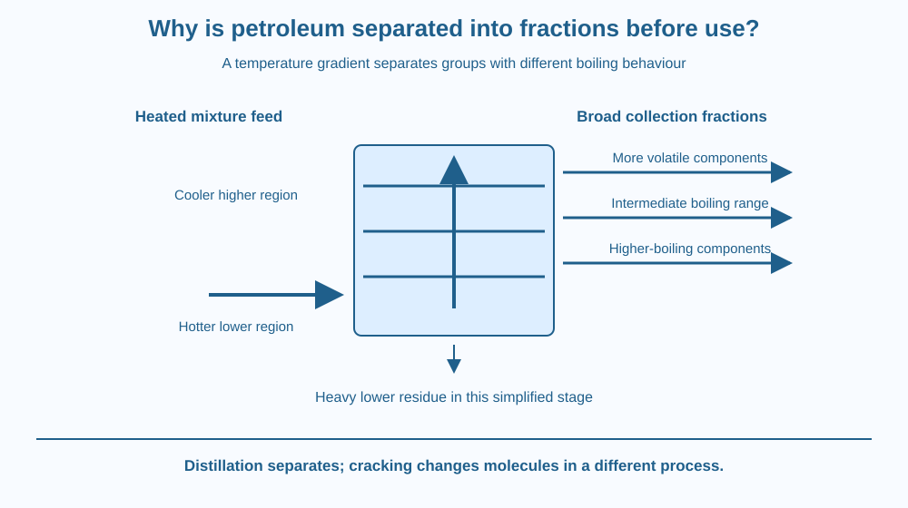

Explain why crude petroleum is separated into fractions with different boiling ranges. Trace vaporisation, rising vapour and condensation through a temperature gradient. Distinguish separation from cracking and avoid treating refinery fractions as single pure compounds.
Crude petroleum is a mixture, yet it supplies materials for several different uses. A refinery does not simply label the same unchanged liquid petrol in one bottle and lubricating oil in another. It separates groups of components with different physical behaviour.
Why do some components rise farther through a distillation column before condensing? The answer involves the temperatures at which they remain in the vapour phase and the changing temperature within the column.
Understanding this sequence explains the column's structure more usefully than memorising a vertical list of product names.
Crude petroleum contains many compounds, predominantly hydrocarbons, with a range of molecular structures and sizes. These components do not all vaporise and condense under the same conditions. A mixture can therefore be separated partly by exploiting differences in volatility.
A fraction is a collected portion containing compounds within a relevant range of properties, often a boiling range. A refinery fraction is generally not one pure substance with a single molecular formula or one exact boiling point.
In a simplified fractional distillation model, heated feed enters a column that is hotter lower down and cooler higher up. Components that enter the vapour move upward. The vapour encounters regions at progressively lower temperatures.
Less volatile, higher-boiling components tend to condense in warmer lower regions. More volatile, lower-boiling components can remain vapour farther upward before condensing or leaving through the upper system. The temperature gradient therefore helps sort the mixture.
Contact between vapour and liquid within the column improves the separation. Trays or packing can provide repeated opportunities for exchange. The real process is more sophisticated than each molecule floating to one perfect floor and staying there forever.
Some heavy material may remain as a lower residue in a particular distillation stage. Refineries can use more than one stage and different pressure conditions. The diagram in this lesson is an introduction, not a complete refinery flow sheet.
Cracking is different: it changes larger hydrocarbon molecules into smaller products through chemical processing. Distillation separates based on physical properties without requiring that every molecule change its chemical identity. A refinery may use both operations for different purposes.
The useful products depend on further treatment and specifications as well as the initial separation. It is therefore misleading to say that a named fraction straight from one tray is automatically a finished fuel ready for every engine. No exact tray temperature or composition is universal across all refineries.
Draw a tall column with a warm lower region and cooler upper region. Place three imaginary component groups beside it, each labelled lower, intermediate or higher volatility.
Trace how far each can remain as vapour in the simplified gradient. Then draw side collection routes where liquid fractions can be removed. Keep every group represented as several components rather than a single identical molecule.
Add a separate box for cracking with a changed molecular symbol. The contrast helps prevent a common confusion: a physical separation column and a chemical conversion unit can both belong to a refinery while performing different jobs.
The SVG shows heated feed entering the lower part of a column, rising vapour arrows and a hotter-to-cooler vertical gradient. Three collection levels indicate broad fractions rather than exact commercial product specifications.
Labels explain that higher-boiling material condenses lower and more volatile material travels farther upward. A bottom route represents heavy residue. The arrows are process relationships, not measured flow rates.
A small comparison states distillation separates while cracking changes molecules. The illustration excludes flame or heater construction details and should not be interpreted as a home experiment with fuel.

Refineries supply several streams that can be processed into fuels and other materials used in India. The range of uses reflects the mixture's varied components and the processing steps applied, not a claim that crude oil contains finished labelled products in separate layers.
Fuel choice also involves engine design, emissions requirements and product quality. This lesson explains separation and does not recommend a particular fuel or provide current market specifications.
Petroleum liquids and vapours can be hazardous and flammable. Students should use a diagram only. Heating fuel, opening unknown containers or trying to build a distillation apparatus at home is outside this activity.
Use paper, a pencil and three colours. No liquids, fuel or heat are needed.
Ask a partner to identify which process preserves molecular identity in the model and which changes it. The coloured groups are illustrative, not real composition data. Do not assign precise temperatures or claim that every fraction contains only one compound.
Why would a column with nearly the same temperature everywhere perform differently from the intended gradient? Explain which part of the sorting model would be weakened.
Now consider two components with very similar boiling behaviour. Would separating them be as easy as separating groups with very different behaviour? The question shows why real fractionation relies on repeated exchange and process design rather than one simple cooling event.
What is a petroleum fraction?
Answer: B — Fractions group components with related physical behaviour rather than necessarily one formula.
Why can more volatile components travel higher in the column?
Answer: A — Lower-boiling components can stay in the vapour farther up the cooling gradient.
A process breaks larger hydrocarbons into smaller molecules. What is it doing?
Answer: C — Breaking molecular structures changes substances rather than merely sorting a mixture.
Create a refinery explanation for someone who believes distillation cuts long molecules into short ones. Use the column model and a separate cracking diagram to correct the claim.
Label one fraction as a mixture with a boiling range. Include an explicit limitation that your diagram does not provide exact operating settings or a finished-fuel specification. The aim is a clear mechanism distinction, not a catalogue of unsupported industrial numbers.
A useful industrial product stream can still be a mixture. Purification does not always mean isolating one compound completely. Fractionation groups components by useful physical behaviour, which can meet a processing goal even when many different molecules remain together in the collected stream.
Fractional distillation sorts petroleum components by volatility through a temperature gradient; fractions are mixtures, while cracking is a separate chemical conversion.